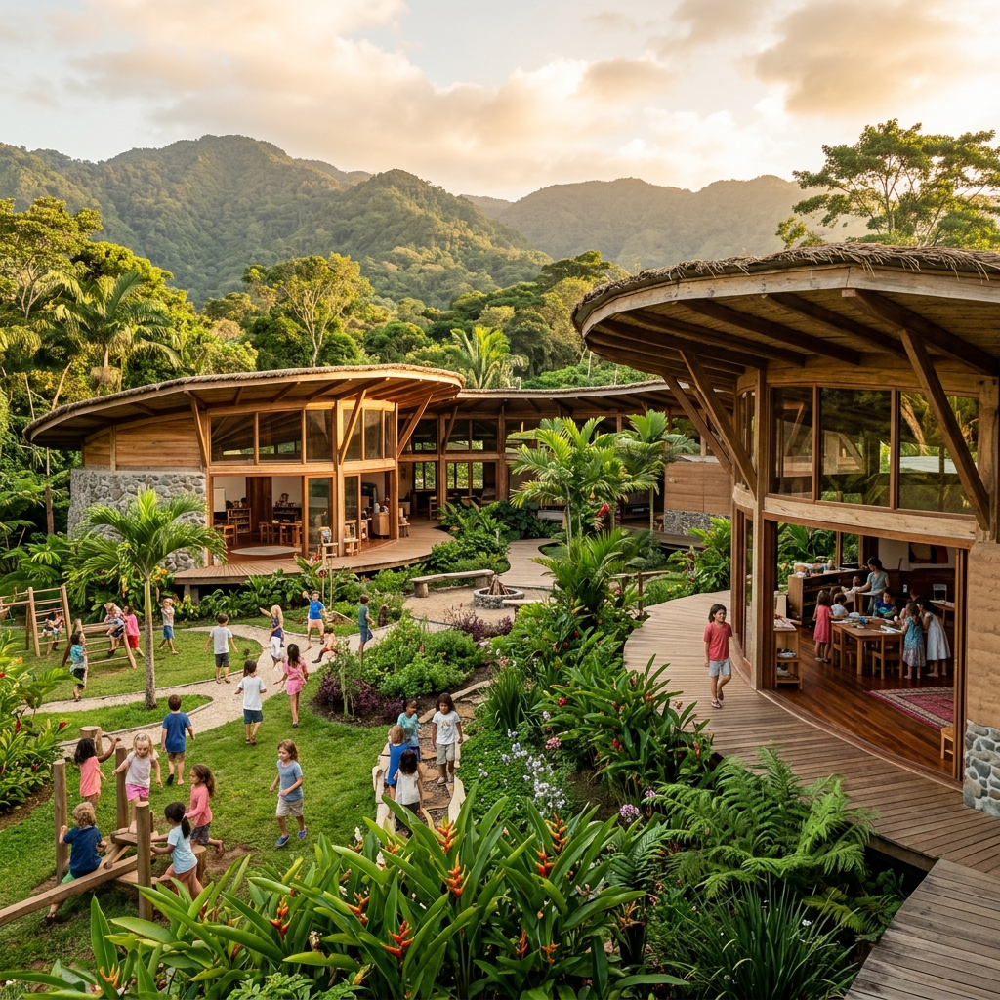
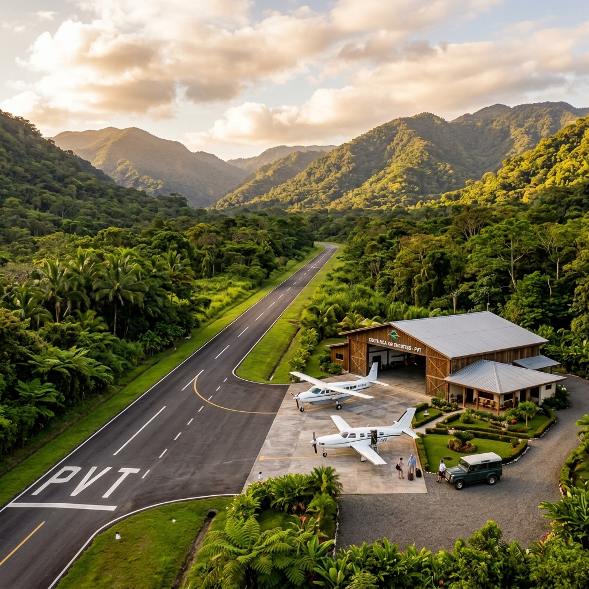

This is what sits
adjacent to Las Lomas.
RISE is a 400-acre intentional community that took years and millions to build. Its infrastructure, including a school, airstrip, retreat center, and co-working space, serves as a built-in amenity base for any future Las Lomas development.

Waldorf-Inspired School
RISE's on-site school with solar power, rainwater collection, and amphitheater is the #1 reason families relocate here. It's right next to Las Lomas.

Private Airstrip & Hangars
RISE's private airstrip offers 25-minute flights to San José, bypassing 3-hour drives. Las Lomas buyers would have access to this infrastructure immediately.

Fiber-Optic Co-Working Hub
RISE's co-working studio with meeting rooms, podcast facilities, and fiber-optic internet attracts entrepreneurs and remote founders. The exact buyer profile for Las Lomas.